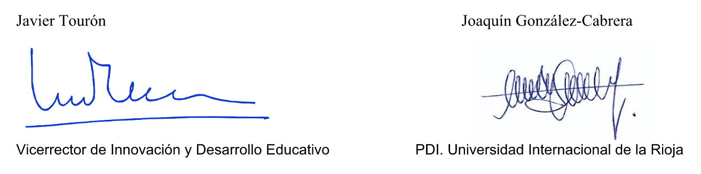

Has sido seleccionado para participar en esta investigación, ya que perteneces a alguna asociación de padres vinculada a las altas capacidades, tu hijo o hija tiene reconocidas altas capacidades y se encuentra escolarizado en estos momentos en algún centro del territorio español. Además, tu hijo debe tener entre 9 y 18 años. Si aceptas participar en esta investigación, se te solicitará rellenar unas preguntas sociodemográficas (sexo, edad, CC.AA. donde reside, etc.) y varios cuestionarios en formato online:
A las asociaciones de padres y madres de alumnos con altas capacidades se les pondrán facilitar los resultados generales de los participantes, lo que puede constituir un informe técnico de uso educativo tanto interno como de cara a acciones político educativas.
Si tienes alguna pregunta o deseas más información sobre esta investigación, por favor comuníquese con el Prof. Joaquín Manuel González Cabrera en el correo electrónico: joaquin.gonzalez@unir.net .
Si pulsas el botón de “Aceptar” se entiende que estás de acuerdo con lo expuesto y autorizas a tu hijo o hija a participar en dicha investigación. Si eres un menor que no has recibido la pertinente autorización familiar debes hacer clic en “Rechazar”.El grupo de investigación "Análisis y prevención del ciberacoso" (CB-OUT) de la Universidad Internacional de la Rioja (UNIR) presenta varias líneas de investigación centradas directamente en este problema y también en temas del comportamiento online y los usos problemáticos de Internet. Este grupo se caracteriza por un enfoque singular y diferente, de un problema complejo que ha sido (y sigue siendo) abordado por numerosos investigadores en el panorama nacional e internacional.
En relación directa sobre el ciberacoso cabe destacar la unión de metodologías de evaluación psicológica mediante auto-informe con marcadores bioquímicos (especialmente en la evaluación del estrés a través de la hormona del cortisol), así como trabajos con muestras poco exploradas (altas capacidades) y en contextos internacionales (Latinoamérica). Así pues las líneas de trabajo son:La línea de investigación sobre alumnos de alta capacidad intelectual se comenzó en la Universidad de Navarra en 1994.
El interés de esta línea de investigación, meramente intelectual en sus inicios, dio paso enseguida a un decidido empeño por hacer reales los principios de la entonces vigente LOGSE respecto a la atención a la diversidad (art. 36 y 37) y a las necesidades educativas que de ella se derivan en relación con los alumnos de alta capacidad, interés que de modo más o menos intenso ha seguido vigente en las legislaciones educativas posteriores.Es patente la importancia que para el desarrollo del sistema educativo tiene la promoción de la excelencia y el principio de igualdad de oportunidades, que exige que a cada alumno se le dé la atención educativa que en función de sus características precisa, bien distinto del igualitarismo que en algunas ocasiones parece preponderar en la educación.
La personas más capaces constituyen el activo más valioso de cualquier sociedad, pero el talento no se desarrolla si no se cultiva y es imposible cultivarlo si no se identifica. En un sistema educativo moderno, que tiende a esgrimir como bandera la calidad, la atención a la igualdad y promoción de la excelencia se convierten en argumentos inexcusables.
Así, identificación y desarrollo de programas educativos han sido, y continúan siendo, los dos ejes de esta línea de investigación que de un enfoque globalista, centrado en capacidades intelectuales generales, ha dado paso -de acuerdo con los enfoques del paradigma sobre la alta capacidad preponderante hoy en día- a una identificación de talentos específicos y de programas educativos encaminados al fomento de dichos talentos.
Los principios que rigen la actividad investigadora se alinean con los del Talent Search Concept, planteado inicialmente por Stanley en 1972, y desarrollado por centros y Universidades como Johns Hopkins, Northwestern, Denver, Duke, Arizona, entre otras. Precisamente la relación con la Universidad de Johns Hopkins y en particular con su Center for Talented Youth ha sido constante desde mediados de los noventa. Pero la atención a los alumnos más capaces es difícil si no se sabe como hacerlo, por ello dentro de esta línea de trabajo se atiende también a la formación específica de profesores y a la atención y orientación de las familias. Junto con ello, se procura promover el desarrollo de políticas educativas que respalden los resultados de la investigación, y la atención y asesoramiento técnico a los centros educativos. En resumen, esta línea de investigación se ha venido articulando, con diferentes énfasis según los momentos y posibilidades, en torno a los seis ejes siguientes:Un objetivo central del trabajo es la evaluación del acoso y el ciberacoso. Para ello, se contará con dos cuestionarios con adecuados indicadores de validez y fiabilidad, es decir, que miden lo que dicen medir y además lo miden bien. Concretamente hablamos de la versión española del European Bullying Intervention Project Questionnaire que evalúa victimización y agresión mediante acciones como: golpear, insultar, amenazar, robar, decir palabras malsonantes, excluir o difundir rumores (Ortega, Del Rey y Casas, 2016). Por otro lado, se cuenta con el Cuestionario de Screening del acoso entre iguales (escala tecnológica) de Garaigordobil (2013). Esta herramienta permite triangular para cada sujeto su rol en tres perfiles relacionados con el ciberacoso: cibervíctima, ciberagresor, ciberobservador (adicionalmente se obtienen indicadores combinados del perfil de cibervíctima-agresor).
Adicionalmente, se quiere analizar otras variables de interés con las que poder relacionar los problemas antes mencionados, especialmente pensando en posibles vías de intervención. Todas estas posibilidades cuentan con herramientas de evaluación que gozan de adecuados indicadores de fiabilidad y validez y han sido publicados, sin excepción, en revistas o editoriales de prestigio nacional e internacional.Estimados padres:
El motivo de la presente es doble, por una parte poneros al corriente del estudio que desde la Universidad Internacional de La Rioja (UNIR) hemos diseñado sobre el “Acoso y ciberacoso en la población de alumnos de Altas Capacidades” y, por otra, pedir vuestra colaboración en el mismo. Ya hemos entrado en contacto con muchas asociaciones que nos han manifestado su interés en esta iniciativa.
Respecto al estudio, se trata de una investigación científica rigurosamente planteada que se apoya en la fortaleza del grupo de investigación: "Análisis y prevención del ciberacoso", que ha venido dirigiendo el profesor Joaquín Gonzalez-Cabrera, del que os ofrecemos algunos resultados en la sección correspondiente de esta web. Por otra parte, añadimos el área de estudio sobre las Altas Capacidades y Desarrollo del Talento que vengo cultivando desde 1993 y que os es de sobra conocida. Una breve descripción está incluida en esta web también (pueden verse las publicaciones en http://www.javiertouron.es/p/javier-touron.html). Así mismo, forman parte del equipo investigador del proyecto profesores de la Universidad de Murcia (Dra. Prieto y Dra. Ferrando) y de la Universidad de Radbou -Holanda- (Dra. Hoogeven), todas ellas con un extenso y reconocido recorrido investigador en el área de las Altas Capacidades.
El problema del acoso, tanto el que se realiza dentro del contexto escolar como a través de las redes sociales, está adquiriendo una notoriedad y proporciones alarmantes en los centros educativos, pero poco o nada se ha investigado sobre el acoso específico a los alumnos más capaces que, como ya sabemos, son objeto de diversas dificultades en el entorno escolar.
Pensamos que este estudio nos puede ofrecer resultados relevantes y valiosos sobre un problema latente que precisa de intervención educativa, y que puede ayudar a visibilizar mejor la problemática general de este alumnado.
En esta web os ofrecemos detalles técnicos del estudio en el que nos gustaría que tomaseis parte, animando a vuestros asociados para que autoricen la participación anónima de sus hijos en la recogida de los datos que precisamos para llevar a cabo el estudio. Dicha recogida de datos se realizará mediante un cuestionario online que está dentro de la web que visitas. Esta investigación no tendrá coste alguno ni para las asociaciones ni para los alumnos (familias) que participen. Los datos generales serán devueltos a las asociaciones participantes a través de un informe particular y otro general del conjunto de la investigación.
Esta iniciativa cuenta con el refrendo del Comité ético de Investigación del Principiado de Asturias, donde ha sido evaluado el estudio consiguiendo el informe favorable (Ref. 41/17).
Para terminar, quisiéramos daros las gracias por participar en el proyecto y por vuestra preocupación por la mejora de la calidad de vida de vuestros hijos. Sin otro particular y en la confianza de que el estudio os resulte de interés, aprovechamos para enviaros un saludo cordial.